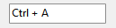

HotKeyBox control
The HotKeyBox control enables the user to enter a combination of keystrokes to be used as a hot key. A hot key is a key combination that the user can press to perform an action quickly. For example, a user can create a hot key that undoes the last action performed in the application and assign it to Ctrl + Z. The hot key box control displays the user's choices and ensures that the user selects a valid key combination. The following screen shot shows how a hot key box control appears after the user enters the Ctrl + A key combination.

Keys
To get or set the currently inputted keys in the control, use the Keys property:
hotKeyBox1.Keys = Keys.Control | Keys.Z;
The control also allows setting the extended key. To get or set the extended key, use the IsExKey property.
hotKeyBox1.IsExKey = true;
Rules
The hot key box control allows setting rules. Rules determine which modifiers are counted as invalid and are not able to be used as a key combination. For example, you may block the Ctrl key to make combinations like Ctrl + Z invalid. To set the rules, set the Rules property to a bitwise combination of HotKeyBoxRules values:
hotKeyBox1.Rules = HotKeyBoxRules.Ctrl | HotKeyBoxRules.ShiftCtrl;
When a user enters an invalid key combination, as defined by rules, the system uses the bitwise-OR operator to combine the keys entered by the user with the flags specified in the FallbackValue property. The resulting key combination is converted into a string and then displayed in the hot key control.
// Example: fall back to Ctrl+Alt if user enters invalid combination
hotKeyBox1.FallbackValue = Keys.Control | Keys.Alt;
HotKeyChanged event
The HotKeyChanged event fires when the inputted hot key changes in the control. Note that this event fires for every keystroke, even if that keystroke is a modifier key, so the event will still fire before the user types an actual non-modifier key.
Once the event fires, invoke the getter of the Keys property on the HotKeyBox to get the pressed keys.